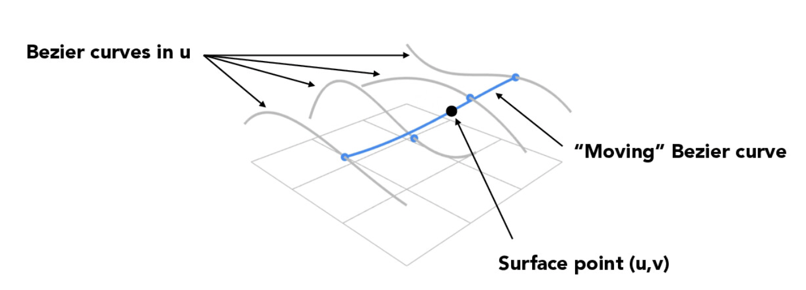

Overview
In this homework, we learned about Bezier curves and surfaces, and used that knowledge to understand more complex mesh operations, like edge flipping and edge splitting. We used flipping and splitting to upsample an image with triangle meshes, producing a higher-grained image from a coarse mesh.
Section I: Bezier Curves and Surfaces
Part 1: Bezier Curves with 1D de Casteljau Subdivision
Briefly explain de Casteljau's algorithm and how you implemented it in order to evaluate Bezier curves.The de Casteljau algorithm takes n + 1 control points for an intended curve of degree n and recursively subdivides each line segment into t and 1 - t, where t is a value between 0 and 1 representing the distance from the left control point. The resulting control points (n) are similarly subdivided, until the algorithm arrives at 1 final control point, which is on the curve defined by the initial control points.
We iterated through all n+1 control points and used the lerp formula on the spec: p_i' = lerp(p_i, p+i+1, t) = (1-t)*p_i + t*p_i+1 to get the linear interpolation between control point i and i+1. We then saved that to a vector and for each iteration, we added the intermediate point we found to this vector, returning it at the end.
Take a look at the provided .bzc files and create your own Bezier curve with 6 control points of your choosing. Use this Bezier curve for your screenshots below.
I created the file in curve3.bzc. The original points are shown here.

Show screenshots of each step / level of the evaluation from the original control points down to the final evaluated point. Press E to step through. Toggle C to show the completed Bezier curve as well.
|
|
|
|
|
|
|
|
|
Show a screenshot of a slightly different Bezier curve by moving the original control points around and modifying the parameter \(t\) via mouse scrolling.
Part 2: Bezier Surfaces with Separable 1D de Casteljau
Briefly explain how de Casteljau algorithm extends to Bezier surfaces and how you implemented it in order to evaluate Bezier surfaces.We performed a similar version of de Casteljau (from Part 1) on 3D points (x, y, z). A Bezier surface is defined by multiple Bezier curves; as shown on the lecture slide below, we had to take the final interpolated point per curve (grey), then create a curve (blue) from those points and create a surface from extending that curve over each of the sub-curves. The method evaluateStep() takes n control points and finds n - 1 new control points from n - 1 edges, and the method evaluate1D() extends evaluateStep() by calling it recursively, reducing n control points down to 1 final interpolated point.
Show a screenshot of bez/teapot.bez (not .dae) evaluated by your implementation.
Section II: Triangle Meshes and Half-Edge Data Structure
Part 3: Area-Weighted Vertex Normals
Briefly explain how you implemented the area-weighted vertex normals.We implemented the area-weighted vertex normals by iterating through all the faces (triangles) incident to the given vertex using the half-edge data structure. For each neighboring face, we first determined the vectors representing the edges of the triangle (using the current vertex and the next vertex in the iteration), and then computed the cross product of these vectors to find the face's normal vector. This normal vector is then scaled by the area of the triangle (half the magnitude of the cross product). The scaled normal vectors for all incident faces are summed to get a cumulative vector, which approximates the surface normal at the vertex, taking into account the areas of adjacent faces. Finally, this vector is normalized to get a unit normal vector, which is then returned as the approximate normal at the vertex. We used this approach, since iterating over the half edges instead of the edges and faces directly helped reduce our time complexity of our solution from O(n^2) to O(n). This method also ensures that larger faces contribute more to the vertex normal, resulting in a more accurate representation of the teapot’s overall geometry.
Show screenshots of dae/teapot.dae (not .bez) comparing teapot shading with and without vertex normals. Use Q to toggle default flat shading and Phong shading.
Without vertex normals (original):
With vertex normals:
Part 4: Edge Flip
Briefly explain how you implemented the edge flip operation and describe any interesting implementation / debugging tricks you have used.The edge flip operation is a way to convert a diagram with one edge touching 2 of 4 vertices into a diagram with the edge spanning the other 2 vertices instead. We used the linked CMU resource as a guide for my image, ensuring to draw out each mesh element and its corresponding changes. We organized my code such that we already had access to each mesh element while modifying pointers, and each of our variables corresponded exactly with our diagram, which made it a lot easier to write out the proper steps and debug our code.
Show screenshots of the teapot before and after some edge flips.
Before edge flip:
After edge flip #1:
After edge flip #2:
After edge flip #3:
After multiple edge flips:
Write about your eventful debugging journey, if you have experienced one.
Because we took time to draw out my diagram and each mesh element, we didn't have too much of a hard time in debugging! We mainly wrote out each mesh element in our code as a variable as it corresponded to our diagram, which helped us one-to-one map the pointer changes to our diagram. Therefore, by validating that our diagram was correct, we were also easily able to validate that our code was correct.
Part 5: Edge Split
Briefly explain how you implemented the edge split operation and describe any interesting implementation / debugging tricks you have used.We first create a new vertex (v4) at the midpoint of the edge to be split. This is usually done by averaging the positions of the two vertices at the ends of the edge. Then, we created new edges (e5, e6, e7) to connect the new vertex (v4) with the existing vertices (v0, v1, v2, v3). The connectivity of these edges is represented by the new half-edges (h10, h11, h12, h13, h14, h15). We then used the handy setNeighbor() function to set all the attributes (even ones that haven't changed) of all 15 halfedges in order to ensure that we werent missing anything. There were also new faces created by the new edges that were added, so we modified the halfedges to reference these new faces as well. In terms of implementation tips, I found 2 things helpful: first, having a diagram of how the triangle looks before and after an edge flip and labelling all elements (this was suggested in the spec), but also being sure to test after every addition.
Show screenshots of a mesh before and after some edge splits.
Before Edge Splits (original w/ shading toggled):
After Edge Splits (w/ shading toggled):
Show screenshots of a mesh before and after a combination of both edge splits and edge flips.
Before edge splits/flips (original):
After edge splits/flips:
Write about your eventful debugging journey, if you have experienced one.
On our first attempt, we completely forgot to create new faces and have our new halfedges reference them,
so we ended up with these funny black holes as shown here:
Ended up fixing those by creating the faces and referencing them correctly.
We also miscounted the number of halfedges that needed to be modified, as we only had 12 in our hand drawn diagram,
so it took us a while to realize we were missing some, since some edges and verticies didn't have associated halfedges.
If you have implemented support for boundary edges, show screenshots of your implementation properly handling split operations on boundary edges.
Did not implement.
Part 6: Loop Subdivision for Mesh Upsampling
Briefly explain how you implemented the loop subdivision and describe any interesting implementation / debugging tricks you have used.The loop subdivision algorithm iteratively divides a set of edges and vertices to create a more accurate mesh of the image; the coarse mesh becomes a more high-resolution one. This happens by subdividing each triangle into 4 smaller triangles (4-1 subdivision), then updating the vertices of each triangle with some weighting scheme. In this case, we weight the two shared vertices of the two triangles in a sub-mesh higher than the two non-shared vertices.
In implementing this algorithm, we actually used the recommended approach on the spec, consisting of 5 parts. We first computed old positions for all existing vertices, then new positions for split edges (without splitting the edges themselves yet). Then, we split all edges and flipped any edges that were not already part of the existing mesh. Lastly, we updated the newPosition argument of each vertex with the new position calculated in the 2nd step of this algorithm.
To debug, we made extensive use of the debugger to check that our values were actually updating the way we thought they would. We also ended up using the diagrams on the spec and EdStem extensively, understanding exactly which edges needed to be flipped and working through our issues with infinite looping while edge splitting.
Take some notes, as well as some screenshots, of your observations on how meshes behave after loop subdivision. What happens to sharp corners and edges? Can you reduce this effect by pre-splitting some edges?
After the loop subdivision, you can tell that the sharp edges become smoother (apparent from the smoother headlights in the second image compared to the first). We can reduce this effect by pre-splitting some edges, as evidenced in the next subpart.
Original beetle:
Loop subdivision beetle:
Load dae/cube.dae. Perform several iterations of loop subdivision on the cube. Notice that the cube becomes slightly asymmetric after repeated subdivisions. Can you pre-process the cube with edge flips and splits so that the cube subdivides symmetrically? Document these effects and explain why they occur. Also explain how your pre-processing helps alleviate the effects.
With no preprocessing, our cube looked like this after a few subdivisions:
After splitting the original cube's edges twice each, this is what the cube looked like:
After subdividing this preprocessed cube, this is what the cube looked like:
If you have implemented any extra credit extensions, explain what you did and document how they work with screenshots.
N/A
Part 7 (Optional, Possible Extra Credit)
Save your best polygon mesh as partsevenmodel.dae in your docs folder and show us a screenshot of the mesh in your write-up.N/A
Include a series of screenshots showing your original mesh and your mesh after one and two rounds of subdivision. If you have used custom shaders, include screenshots of your mesh with those shaders applied as well.
N/A
Describe what you have done to enhance your mesh beyond the simple humanoid mesh described in the tutorial.
N/A